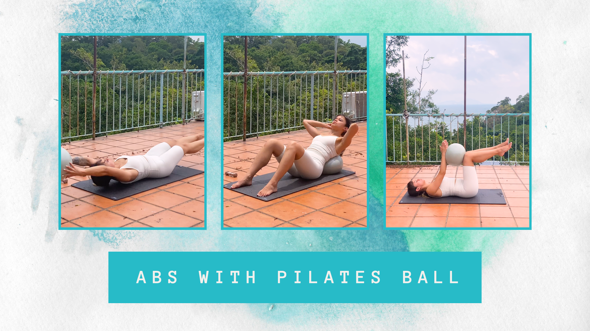

Are Pilates ball worth it?
A 9 minute Pilates Abs workout using a stability ball.

With the ever-evolving technology, and upgraded devices to accompany this, it seems developing a hunched posture is inevitable.
Office jobs, driving and mobile phone usage seems to be the main culprit. All these activities keep the spine in a flexed (rounded) position for hours.
But how can we fight a consequence from something that is here to stay?
Through addressing and rectifying the bad habits that your body has adopted to counter these activities in everyday life.
Benefits
Pilates seems to have taken the world by storm, reshaping fitness culture, social media aesthetics and wellness trends from all over the globe.
If you’re a haredcore Yogi, or someone with an interest in mobility, no doubt Pilates is something you have dabbled in from time to time.
Admittedly, I am a sucker for the typical “Pilates body” aesthetic. I love exercising on a mat and it’s fun using the different types of equipment on offer. It definitely beats hip thrusting with a heavy loaded barbell on your pelvis…
Types of pilates equipment range from light dumbbells, stability balls, foam rollers and resistance bands… but exactly how effective are these movements?
Let’s take a look at the stability ball today.
Helping correct bad posture
A main benefit of the Pilates ball is the unstable surface it provides, forcing us to engage our abs, core and lower back muscle.
It can be used for exercises like crunches and leg raises, as you’re forced to consciously control your body and the range of motion as you carry out the exercises.
Therefore, the stability ball can help in reinforcing a neutral pelvis and reducing anterior pelvic tilt.
The following exercises target your deep core. Ensure you keep your lower back glued to the ground as your carry out these movements:
- Ball Crunch
- Dead Bug
- Ball-to-Toe Taps
- Knee Tucks
- Ball Pass